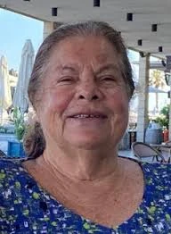

כפר עזה
דגני נעמי ז"ל
אחות, ממקימות המרפאה בכפר עזה ואשת נתינה
סיפור חיים
נעמי דגני ז״ל נולדה בכ״א בתמוז תש״ג, 24 ביולי 1943, בקיבוץ כפר בלום שבעמק החולה בגליל העליון. היא הייתה בתם הבכורה של משה וחיה ניר, ממקימי הקיבוץ ומראשוני המתיישבים בעמק החולה, ואחות לחנה, אהרון ותמי.
נעמי גדלה והתחנכה בקיבוץ כפר בלום. בגיל 18 הגיעה במסגרת שנת שירות לכפר עזה, שהיה אז קיבוץ ספר צעיר בן חמש שנים בלבד, ובו כארבעים חברים וחברות.
במסגרת שירותה הצבאי, בשל מחסור לאומי באחיות, הוכשרה נעמי כאחות בבית הספר לאחיות בתל השומר. מיד לאחר מכן שבה לכפר עזה כדי לסייע בהקמת המרפאה ולשמש כאחות הקיבוץ.
בשנת 1966 נישאה לישראל אלתרמן, מגרעין המייסדים של כפר עזה. בהמשך נולדו להם ארבעה ילדים: ענת, יוני, דרור ולילך.
בשנת 1975 יצאה המשפחה לשליחות בת שלוש שנים בהאיטי שבאיים הקריביים. לקראת השליחות נדרשה המשפחה לבחור שם משפחה ישראלי יותר, וכך שונה שם המשפחה לדגני.
כל חייה עבדה נעמי כאחות. במשך שנים רבות עבדה במרפאת קיבוץ כפר עזה, ובהמשך, במשך יותר מעשרים שנה ועד פרישתה לגמלאות, התמסרה לעבודתה כאחות במחלקת הפגים בבית החולים סורוקה בבאר שבע. הפגייה הייתה עבורה בית שני, והיא טיפלה בפגים הרכים במסירות יוצאת דופן, בלב ענק ובחיוך רחב.
גם לאחר פרישתה המשיכה נעמי לעבוד כאחות בהתנדבות במרפאת הקיבוץ, והושיטה יד לעזרה בכל עת וככל שנדרשה. היא ראתה במקצוע הטיפולי שליחות של חמלה, מקצועיות והצלת חיים.
המשפחה, ובעיקר תשעת נכדיה, היו עולם ומלואו עבור סבתא נעמי הגאה. בשבילה כולם היו המקסימים והמושלמים ביותר בעולם כולו.
נעמי הקפידה על אורח חיים פעיל ובריא ועסקה במגוון פעילויות ספורט, גם כשעם השנים הדבר נעשה מאתגר יותר. בשנים האחרונות הרחיבה את תחומי העניין שלה גם לעולם האומנות, התנדבה לסייע בסדנת האומנות של הקיבוץ, והשתתפה בקביעות בחוג יצירת מנדלות, שהפך לתחביב מרכזי ואהוב.
ישראל, בעלה של נעמי, נפטר פחות משנה לפני הירצחה, לאחר חמש וחצי שנים שבהן טיפלה בו וסעדה אותו במסירות גדולה.
שבעה באוקטובר והימים שאחריו בבוקר שבת, שמחת תורה תשפ״ד, 7 באוקטובר 2023, חדרו מחבלים לקיבוץ כפר עזה במסגרת מתקפת הטרור הרצחנית על יישובי עוטף עזה.
נעמי שהתה לבדה בביתה בזמן המתקפה. בשעותיה האחרונות הספיקה לשוחח בטלפון עם חלק מילדיה ונכדיה. גם באותם רגעים קשים ניסתה להרגיע, לשמור על קור רוח, וכהרגלה — גם לצחוק ולהתבדח איתם.
בסביבות שעות הבוקר נותק עימה הקשר. לאחר ימים קשים של חוסר ודאות קיבלה משפחתה את הבשורה הכואבת כי נרצחה בביתה.
נעמי דגני נרצחה בכפר עזה בכ״ב בתשרי תשפ״ד, 7 באוקטובר 2023. בת 80 הייתה במותה. היא הובאה תחילה למנוחות בבית העלמין בקיבוץ שפיים, וכשהתאפשר הועברה למנוחת עולמים בבית העלמין המקומי בכפר עזה.
זיכרון ומילים מהלב בני משפחתה כתבו כי הירצחה של נעמי הותיר במשפחה חלל עצום, וכי נחמתם היחידה היא שבשעותיה האחרונות הספיקה לדבר עם חלק מילדיה ונכדיה, לצחוק איתם ולהישאר כפי שהייתה תמיד — אוהבת, חייכנית ומרגיעה.
הם כתבו: ״נעמי הייתה אישה אוהבת, עם שמחת חיים, חייכנית, אופטימית, טובת לב, רגישה ורגשנית, שחיה את חייה בפשטות, בנתינה, בחמלה גדולה ובאמפתיה כלפי אחרים.״
בתה ענת סיפרה כי נעמי הייתה אומרת שלסיפוק שמרגישים כשעוסקים במקצוע טיפולי אין אח ורע, וששום דבר בעולם לא משתווה לכך — אולי חוץ מילדים ונכדים. היא תיארה אותה כאישה של נתינה, חום ואמפתיה, וכאחות מסורה שהצילה בחייה חיים רבים.
לזכרה של נעמי הוצבה במכללה האקדמית ספיר עמדת מפעם חכמה של מד״א. היוזמה נולדה בעקבות רעיון של נכדה, ארבל, והעמדה נתרמה באמצעות קמפיין גיוס המונים של משפחתה ומוקירי זכרה, שביקשו להמשיך את דרכה כאשת רפואה שהקדישה את חייה להצלת חיים.
בטקס חנוכת העמדה אמרה ענת: ״אמא, את השראה עבורנו ואין יותר ראוי ומתאים מלחנוך לזכרך עמדת החייאה זו. מותה, כמו חייה, מוקדש לאהבה ולהצלת חיים.״
נעמי נזכרת כאישה מלאת נועם, אור, חסד ונתינה. אם, סבתא, אחות, חברה ואחות במקצועה ובנשמתה; אישה שחייה היו שליחות של טיפול, חמלה, משפחה ואהבת אדם.